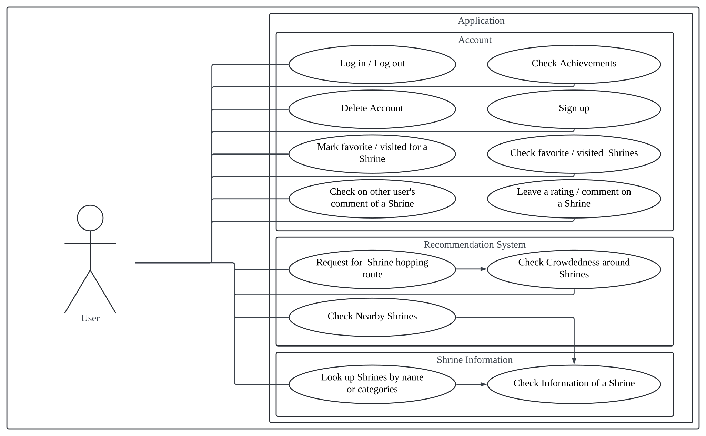
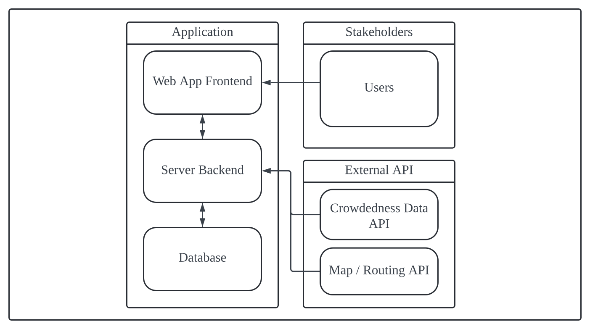
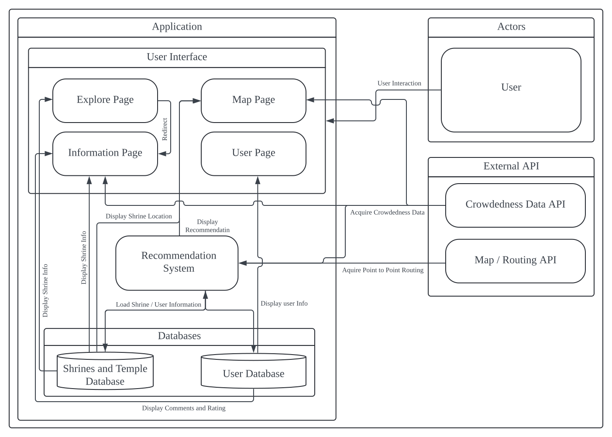

Requirement Specification Document
Preface
1.1 Version History
Currently at Document Version 1.1
| Version | Date | Description |
|---|---|---|
| Version 1.0 | May 20th, 2024 | Initial Version |
| Version 1.1 | May 21th, 2024 | Patch Error on 4.2, 6.2 |
1.2 Intended Audience and Reading Suggestions
This documentation is dedicated to the following.
- Software Developers: those including engineers, and system architects to design, develop and test for accurate implementation
- Project Managers: those to manage resources, track progress, and align with stakeholder expectations by getting an overview of the project scope and progress
- End Users:
- Tourists such as individuals who visit Kyoto
- Individuals who hold specific interest in visiting shrines and temples for cultural, spiritual, or historical reasons
- Kyoto Tourism Association which will promote the application to tourists and locals while enhancing city tourism goals
- Those who are involved in the management and operation of shrines such as priests, staff members, and volunteers, can gain insights from the application to effectively manage crowd flows within their premises
1.3 Document Conventions
| Abbreviation | Full Term |
|---|---|
| FREQ | Functional Requirement |
| NREQ | Non-Functional Requirement |
Introduction
2.1 Project Scope
This project is bounded to the geological location of Kyoto City, Kyoto Prefecture. The project would not include any other area that is not within this bound. For the application itself, it is intended to be used by any people with intentions to visit shrines or temples in Kyoto city. However, the application would still be accessible for anyone with interest.
2.2 Project Perspective
The over-tourism problem in Japan has come to our attention to assist in countermeasures by managing crowds in popular tourist areas, especially shrines and temples. The main objective of our application is to make recommendations to users to find shrines and temples based on real-time crowdedness. In addition to providing the best routes to the destination by showing the user how to avoid crowdedness using real-time information and the crowd forecast, users can freely choose their preferences on shrines and temples. Ultimately, we aim to enhance their experience.
2.3 Use Case Diagram
Here is the use case diagram, Figure 1, this diagram describes how all actor's use case maybe. This system in particular, only has one actor, which is the user of this application.
Figure 1: Use Case Diagram
Glossary
| Terminology | Definition |
|---|---|
| Shrine(s) | Refers to shrines and/or temples. |
| Crowdedness | Refers to the crowdedness ONLY around shrines or temples. |
| Route / Routes | Routes between one or multiple shrines or temples |
| Achievements | Achievements based on visiting shrines that are going to be designed by the developer. |
| Map Page | A dynamic page displaying a interactive map |
| Explore Page | A search tab for shrines and temples |
| Encrypted / Encryption | Security measure to protect sensitive data |
User Requirement
4.1 Functional Requirements
- FREQ 1: Users shall be able to see the explore page as the first page when they open the application
- FREQ 2: Users shall be able to see an interactive explore page showing nearby shrines
- FREQ 3: Users shall be recommended routes for visiting multiple shrines daily
- FREQ 4: Users shall be able to adjust the number of shrines to visit in a day
- FREQ 5: Users shall be able to see route recommendations, including alternative routes if the primary route is not preferred
- FREQ 6: Users shall be provided information to choose the transportation methods for the recommended routes, such as walking, train, and bus, and their price
- FREQ 7: Users shall be able to see crowdedness information on using color-based mapping
- FREQ 8: Users shall be able to filter shrines based on crowdedness levels
- FREQ 9: Users shall be able to use the search functionality to find shrines based on various criteria (e.g., location, popularity)
- FREQ 10: Users shall be able to see historical information about the shrines, nearby shops and restaurants, popular places for views around shines, dates for upcoming events at shrines
- FREQ 11: Users shall be able to create and manage their accounts
- FREQ 12: Users shall be able to delete their accounts anytime they want
- FREQ 13: Users shall be able to save and view their favorite shrines in their accounts
- FREQ 14: Users shall be able to record their visited shrines and see their achievements
- FREQ 15: Users shall be able to leave ratings and reviews for each shrine
- FREQ 16: Users shall be able to see other users’ reviews and shrine ratings
4.2 Non-functional Requirements
- NREQ 1: Users shall be able to access the application from both mobile and desktop
- NREQ 2: Users shall be able to access the system at all times
- NREQ 3: The system shall support the English language at minimum
- NREQ 4: The system shall be able to upholde privacy and security to user profile data.
- NREQ 5: Users shall be able to acquire accurate and up-to-date information on the shrines and temples
- NREQ 6: Users shall be able to recover their account in case of a forgotten account password
System Architecture
The system is generally analogous to a web app, where the system would have a user interface that requests processes from the server to show results to the user. The server would then make requests for data from external APIs. Figure 2 below is a diagram of the relationship between each component.
Figure 2: System Architecture
System Requirement
6.1 Functional Requirements
- FREQ 1: Users shall be able to see the explore page as the first page when they open the application.
- FREQ 1.1: The system shall be set default to open up to the explore page when the application is initialized
- FREQ 1.2: The system shall remember which page the user leaves off when the user exits the application
- FREQ 1.3: The system shall display the page where the user leaves off if the user returns before closing the application
- FREQ 2: Users shall be able to see an interactive explore page showing nearby shrines
- FREQ 2.1: The system shall load a map centralized to the location of the user. It should also display the loaded map as the user opens up the map page
- FREQ 2.2: The system shall load the location of 5 shrines and display it on the map as an icon
- FREQ 2.3: The system shall allow the user to move and navigate within the loaded map As the map is being updated, it also loads shrine locations that are within the scope of the updated map
- FREQ 2.4: The system shall display the crowdedness heat map around the shrines
- FREQ 3: Users shall be recommended routes for visiting multiple shrines in a day
- FREQ 3.1: The system shall be able to produce a shrine hopping route based on the preferences of the user and crowdedness of shrines
- FREQ 3.2: The system shall display the route on the map page while identifying the shrines, the route, and the heat map around each shrine
- FREQ 4: Users shall be able to see route recommendations, including alternative routes if the main route is not preferred
- FREQ 4.1: The system shall produce alternative routes which are displayed under the map page and users
- FREQ 5: Users shall be able to adjust the number of shrines to visit in a day
- FREQ 5.1: The map page should have a slider for selecting how many shrines to recommend to the user
- FREQ 5.2: After the recommendation is displayed, the page should still have a slider to change the number of shrines to recommend
- FREQ 6: Users shall be provided information to choose the transportation methods for the recommended routes such as walking, train, and bus, and their price
- FREQ 6.1: As the recommendation is being suggested, there should be a horizontal bar for the user to select which transportation (walking, train, bus) to use
- FREQ 6.2: The system shall produce multiple routes to hop between shrines and list the routes with the order of price
- FREQ 7: Users shall be able to see crowdedness information on using color-based mapping
- FREQ 7.1: The system shall display the crowdedness data in the format of a heat map in most cases
- FREQ 7.2: The crowdedness heat map shall be able to be overlapped with the main map on the map page
- FREQ 7.3: The system shall be updating the crowdedness data every 5 minutes
- FREQ 8: Users shall be able to filter shrines based on crowdedness levels
- FREQ 8.1: The map page shall have a slider to change the crowdedness level for the recommendation system to filter
- FREQ 8.2: After the recommendation is displayed, the page should still have the slider
- FREQ 9: Users shall be able to use the search functionality to find shrines based on various criteria (e.g., location, popularity)
- FREQ 9.1: The explore page shall have a search bar on the top of the page
- FREQ 9.2: The explore page shall have a list of categories under the search bar
- FREQ 9.3: The explore page shall replace the list of categories with a list of shrines based on the keyword inputted by the user.
- FREQ 9.4: Each entry of the results should include the shrine's name, rating, and crowdedness level
- FREQ 9.5: The listed results should be able to be clicked to see a more detailed information page
- FREQ 10: Users shall be able to see historical information about the shrines, nearby shops and restaurants, popular places for views around shines, dates for upcoming events at shrines
- FREQ 10.1: The information page should have a section on the shrine, including its name, several pictures, a crowdedness heat map, general information, historical information, a nearby restaurant, the closest stations, and dates of upcoming events
- FREQ 11: Users shall be able to create and manage profiles
- FREQ 11.1: The system shall have a user page
- FREQ 11.2: The user shall be able to create an account if there is no account logged in
- FREQ 11.3: The user shall be able to log in if there is no account logged in
- FREQ 11.4: The system shall have a user profile section when an account is logged in
- FREQ 12: Users shall be able to delete their accounts anytime they want
- FREQ 12.1: The system shall delete all user data if user has chosen to delete their account
- FREQ 12.2: After an account is deleted, the system shall allow the users to create a new one
- FREQ 13: Users shall be able to save their favorite shrines and view them
- FREQ 13.1: The user page shall have a favorite shrines section where the user can see a list of shrines they have favorited
- FREQ 13.2: Each entry of the list of favorited shrines shall lead to the information page of the selected shrine
- FREQ 13.3: During recommendation on the map page, there shall be a button to add the shrine recommended to favorite shrines
- FREQ 13.4: The information page of each shrine shall have a button for saving to favorite shrines
- FREQ 14: Users shall be able to record shrines they have visited and see their achievements
- FREQ 14.1: The user page shall have an achievement section
- FREQ 14.2: The user page shall have a visited shrines section for the user to see a list of shrines they visited
- FREQ 14.3: Each entry of the list of visited shrines shall lead to the information page of the selected shrine
- FREQ 14.4: During recommendation on the map page, there shall be a button to add the shrine recommended to visited shrines
- FREQ 14.5: The information page of each shrine shall have a button for saving to visited shrines
- FREQ 15: Users shall be able to leave ratings and reviews for each shrine
- FREQ 15.1: If there is an account logged in, the user shall be able to leave a comment under the information page of the shrine
- FREQ 15.2: If there is an account logged in, in the comment section of the information page, there shall be a text bar for the user to comment
- FREQ 16: Users shall see other users’ comments and ratings for shrines
- FREQ 16.1: The information page for each shrine should include the average rating of all users that left a rating
- FREQ 16.2: There shall be a comment section where comments on the shrine from other users shall be displayed
6.2 Non-functional Requirements
- NREQ 1: The system shall provide a web interface for application features
- NREQ 1.1: The system shall support iOS and Android mobile platforms
- NREQ 1.2 :The system shall support all web browsers such as Safari, Google Chrome, Mozilla Firefox, and Edge
- NREQ 2: Users shall be able to access the system at all times
- NREQ 2.1: The system shall respond to user requests such as planning a route based on specific preferences and changing the filter level of crowdedness level, within three seconds under normal operating conditions
- NREQ 2.2: Loading time shall not exceed five seconds on average, even during peak usage periods
- NREQ 2.3: The system shall be able to handle increasing users without affecting performance
- NREQ 3: The system shall support the English language at minimum
- NREQ 3.1: The system shall support the English US region Locale: "en_US"
- NREQ 4: The system shall be able to upholde privacy and security to user profile data.
- NREQ 4.1: Databases containing personal information relating to users shall be encrypted
- NREQ 4.2: Encryption keys must not be accessible to developers of the system
- NREQ 4.3: The system, excepted for account authentication processes, shall not have any access of user credentials, such as passwords
- NREQ 4.4: User authentication shall be implemented to ensure that only authorized users have access to sensitive information
- NREQ 5: Users shall be able to acquire accurate and up-to-date information on the shrines and temples
- NREQ 5.1: The uptime of the software should be high (99.9%) with mechanisms to handle server failures or unexpected errors
- NREQ 6: The system shall allow users to recover their account in case of a forgotten account password
- NREQ 6.1: The system implement mechanisms for users to enter the email address that created the account and allow users to change the password
System Model
The system is generally separated into five parts: the user interface, the recommendation system, the users and shrines database, external APIs, and the user. The interaction between each part will be described here. The user interacts with the user interface where the user interface interacts with the recommendation system and the database. The user interface can request shrine-hopping routes from the recommendation system and view shrine information from the database as the main functionality. The recommendation system interacts with external APIs, where the crowdedness data is needed when recommending routes. Figure 23 describes these interactions with more detail.
Figure 2: System Model
System Evolution
8.1 Assumption
The system is assuming the user is a singular person or a small group of people. The system does not consider any cases where the user is a large group a people, for example: a bus tour group.
8.2 Anticipated Changes
The team is anticipating changes that may be included in future revisions of the requirement specification document.
- Additional Sub-categories of shrines: There may be categories that users may be interested in, but the system does not support to recommend.
8.2 Constraints
- Time constraint: There are only 15 weeks for the entire project, where completeness of the system implementation is limited.
- Monetary constraint: The system does not propose any resolution to profit for paying API calls. Therefore, in the long run, the project is not sustainable.